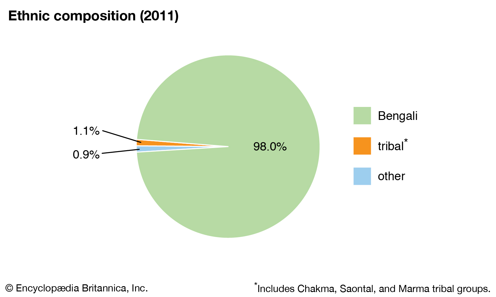

Welcome to Bangladesh
Content
- World Map of Bangladesh
- Land
- Drainage of Bangladesh
- Soils
- Climate
- People
- Languages
- Religion
- Economy
- Health and Welfare
- Education
- Cultural Life
World Map of Bangladesh
Position of bangladesh in south asia
Bangladesh, country of South Asia, located in the delta of the Padma (Ganges [Ganga]) and Jamuna
(Brahmaputra) rivers in the northeastern part of the Indian subcontinent.

The riverine country of Bangladesh (“Land of the Bengals”) is one of the most densely populated countries in
the world, and its people are predominantly Muslim. As the eastern portion of the historical region of
Bengal, the area once formed, along with what is now the Indian state of West Bengal, the province of Bengal
in British India. With the partition of India in 1947, it became the Pakistani province of East Bengal
(later renamed East Pakistan), one of five provinces of Pakistan, separated from the other four by 1,100
miles (1,800 km) of Indian territory. In 1971 it became the independent country of Bangladesh, with its
capital at Dhaka.
Land
Bangladesh is bordered by the Indian states of West Bengal to the west and north, Assam to the north,
Meghalaya to the north and northeast, and Tripura and Mizoram to the east. To the southeast, it shares a
boundary with Myanmar (Burma). The southern part of Bangladesh opens into the Bay of Bengal.
Drainage of Bangladesh
The most significant feature of the Bangladesh landscape is provided by the rivers, which have molded not
only its physiograph but also the way of life of the people. Rivers in Bangladesh, however, are subject to
constant and sometimes rapid changes of course, which can affect the hydrology of a large region;
consequently, no description of Bangladesh’s topography retains its absolute accuracy forlong.

One spectacular example of such a change occurred in 1787, when the Tista River underwent exceptionally high
flooding; its waters were suddenly diverted eastward, where they reinforced the Brahmaputra
Soils
There are three main categories of soils in Bangladesh: the old alluvial soils, the recent alluvial soils,
and the hill soils, which have a base of sandstone and shale. The fertile recent alluvial soils, found
mainly in flooded areas, are usually clays and loams, variously pale brown, sandy, chalky, and mica-laden.
They are deficient in phosphoric acid, nitrogen, and humus but not in potash and lime. The old alluvial
soils in the jungles of the Barind and Madhupur regions are dark iron-rich brown or reddish clays and loams.
They are sticky during the rainy season and hard during the dry periods. The hill soils are generally
permeable and can support dense forest growth.
Climate
Bangladesh has a typical monsoon climate characterized by rain-bearing winds, moderately warm temperatures,
and high humidity. In general, maximum temperatures in the summer months, from April to September, are in
the low to mid-90s F (mid-30s C). April is the warmest month in most parts. The range of high temperatures
in the winter months, from November to March, is greater than in the summer months. January is the coolest
month, with high temperatures averaging in the mid- to upper 70s F (mid-20s C).
People
Ethinic
The vast majority of the population of Bangladesh is Bengali—a term describing both an ethnic and a
linguistic group. The Bengali people are historically of diverse origin, having emerged from the
confluence of various communities that entered the region over the course of many centuries. The Vedda
peoples were perhaps the earliest group to settle in the area. According to some ethnologists, they were
followed by peoples from the Mediterranean and neighbouring areas, particularly those who spoke
Indo-European languages.

Languages
Bengali (Bangla), the national language of Bangladesh, belongs to the Indo-Aryan group of languages and is
related to Sanskrit. Like Pali, however, and various other forms of Prakrit in ancient India, Bengali
originated beyond the influence of the Brahman society of the Aryans. The Pala rulers of Bengal (8th to 12th
century)—who were Buddhists and whose religious language was Pali—did not inhibit the emergence of a
colloquial tongue known as Gaudiya Prakrit, the language from which Bengali developed.
Religion
Most of the people of Bangladesh follow the religion of Islam, which was made the official religion by a 1988
constitutional amendment. The arrival of Muslims in Bengal at the beginning of the 13th century and the
rapid increase in their strength and influence permanently changed the character and culture of the area.
When the Muslims first arrived, Hinduism was by far the dominant religion, although there were pockets of
Buddhists and a few adherents of local religions. The Hindus remained in the majority through the Mughal
period (16th to 18th century). Even as late as the early 1870s, there were more than 18 million Hindus in
Bengal, compared with about 16 million Muslims. From the 1890s onward, however, the weight began to shift
toward the Muslim.
Economy
Bangladesh’s heavy dependence on agriculture has long contributed to seasonal unemployment among rural
farmworkers, as well as to a generally low standard of living in many areas. To counteract this imbalance, a
policy of industrialization was adopted in the mid-20th century. During the period of Pakistani
administration (1947–71), priority was given to industries based on indigenous raw materials such as jute,
cotton, hides, and skins. The principle of free enterprise in the private sector was accepted, subject to
certain conditions, including the national ownership of public utilities. The industrial policy also aimed
to develop the production of consumer goods as quickly as possible in order to avoid dependence on imports.
Health and Welfare
Bangladesh has many government hospitals and rural health centres. Tuberculosis, cholera, and malaria
continue to pose threats to public health, and since about 2000 outbreaks of dengue fever have been a
concern as well. However, an effective approach to the treatment of cholera and tuberculosis has been
developed by research laboratories and hospitals in Dhaka and Comilla, and the incidence of malaria has been
reduced by a malaria-eradication program in which swamps and marshes are regularly sprayed with
insecticides.
Education
The foundation of the educational system in Bangladesh was laid down during the period of British rule. The
system has three levels—primary, secondary, and higher education. Primary and secondary education are both
compulsory, though universal participation has remained more an ideal than a fact. Primary education
consists of eight years, while secondary education lasts four years. Secondary education is divided into a
lower level and a higher level, and public examinations are held at the conclusion of each level of
schooling. Schools in cities and towns are generally better-staffed and better-financed than those in rural
areas.
Cultural Life
The typical household in Bangladesh, particularly in the villages, includes several generations of extended
family. Most marriages are arranged by parents or other relatives, but increasing numbers of educated men
and women choose their own partners. Custom and religion among Muslims require that a dowry be offered by
the husband to the wife, but it is usually claimed only in the event of separation or at the husband’s
death. Divorce is permissible among Muslims, and Muslim law (Sharīʿah) permits limited polygyny, although it
is not widespread. Hindus may obtain a separation by application to a court of law.
Immigration Process
There are 12 steps in Immigration process
- Step 1: Submit a Petition.
- Step 2: Begin the National Visa Center (NVC) Processing.
- Step 3: Pay Fees.
- Step 4: Complete Affidavit of Support.
- Step 5: Collect Financial Evidence and other Supporting Documents.
- Step 6: Complete Online Visa Application (DS-260)
- Step 7: Collect Civil Documents.
- Step 8: Scan Documents
- Step 9: Submit Documents
- Step 10: Interview Preparation
- Step 11: Applicant Interview
- Step 12: After the Interview